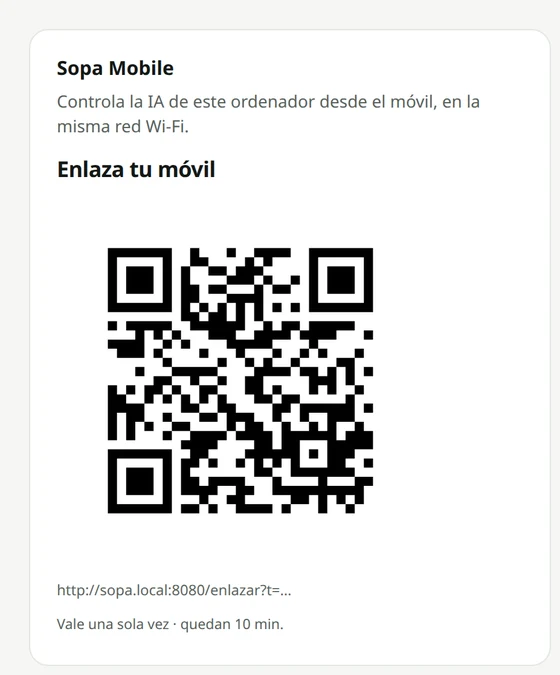
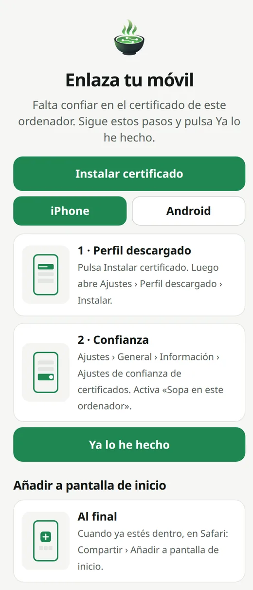
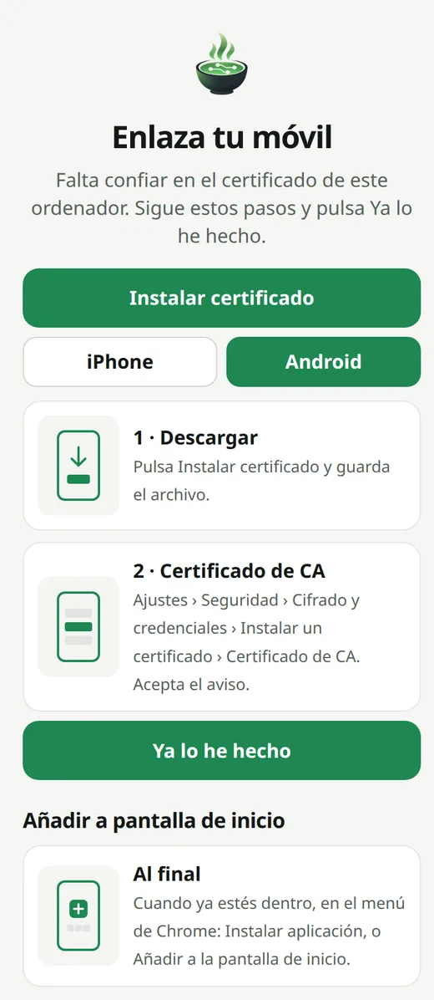

Sopa Mobile · Beta
Cómo enlazar Sopa Mobile
Chatea con la IA de tu PC desde el móvil, en la Wi-Fi de casa. Lo enlazas una vez. Después, entras con la cara o la huella.
Antes de empezar
- El ordenador y el móvil, en la misma Wi-Fi de casa.
- Sopa Mobile viene desactivado. Lo activas tú, en Ajustes › Sopa Mobile.
- Sin nube, sin servidor de Sopa y sin cuenta. Todo pasa entre tu ordenador y tu móvil.
1. Activa Sopa Mobile en el ordenador
En Sopa, abre Ajustes › Sopa Mobile y enciende el interruptor. Aparece un código QR: «Enlaza tu móvil». Vale una sola vez y caduca a los 10 minutos.

2. Escanea el código con el móvil
Apunta la cámara al código. Se abre un asistente que te guía paso a paso.
La primera vez, el móvil tiene que confiar en tu ordenador. Para eso instalas un certificado. Lo crea tu propio ordenador: no pasa por ningún servidor externo.
3. Si tienes un iPhone
- Pulsa Instalar certificado.
- Abre Ajustes › Perfil descargado › Instalar.
- Ve a Ajustes › General › Información › Ajustes de confianza de certificados. Activa «Sopa en este ordenador».
- Vuelve al asistente y pulsa Ya lo he hecho.
- Cuando ya estés dentro, en Safari: Compartir › Añadir a pantalla de inicio.

Probado con un iPhone real, en la red de casa.
3. Si tienes un Android
- Pulsa Instalar certificado y guarda el archivo.
- Abre Ajustes › Seguridad › Cifrado y credenciales › Instalar un certificado › Certificado de CA. Acepta el aviso.
- Vuelve al asistente y pulsa Ya lo he hecho.
- Cuando ya estés dentro, en el menú de Chrome: Instalar aplicación, o Añadir a la pantalla de inicio.

En Android, aún no lo hemos probado en un móvil real.
Bueno saberlo
- La conversación se guarda en tu ordenador. Lo que escribes en uno aparece en el otro.
- Si vuelves a escanear con un móvil ya enlazado, entras directo con la cara o la huella.
- ¿Otro móvil? Pulsa «Es un móvil nuevo» y enlázalo igual.
- En Ajustes ves tus móviles. Con Revocar, le quitas el acceso al momento.
- Al cerrar Sopa o apagar el interruptor, el móvil deja de conectar.
Si no conecta
- Comprueba que el ordenador y el móvil están en la misma Wi-Fi.
- Si el nombre del ordenador no abre, el asistente prueba solo con la dirección de tu red.
- Algunos routers aíslan los aparatos de la Wi-Fi entre sí. Así no se pueden ver.
- ¿Sigue sin ir? Informa de un fallo.
Fuera de casa Beta · 1.3
Primero enlaza el móvil en casa, con los pasos de arriba. Fuera de casa, tu móvil llega a tu PC por un túnel privado de WireGuard. Sin cuenta, sin nube de Sopa y sin servicios de terceros.
En el ordenador
- En Ajustes › Sopa Mobile, activa «Usar fuera de casa». Viene apagado.
- Descarga WireGuard para Windows desde su página oficial. Sopa te deja el enlace.
- Instálalo. Windows te pedirá permiso de administrador.
- Guarda el archivo del túnel e impórtalo en WireGuard.
- Activa el túnel «Sopa». Windows volverá a pedirte permiso.
Sopa no descarga ni instala nada por ti. Tampoco toca el cortafuegos.
En el router
El router tiene que dejar pasar el túnel hasta tu PC. Es abrir una sola puerta, no la casa entera. Sopa te explica cómo en pantalla, pero no cambia nada en el router.
Para saber la dirección de tu casa en internet, pulsa Comprobar: Sopa se lo pregunta a tu router, sin salir de casa. Si no contesta, puedes escribirla tú o pulsar Preguntar en internet, que te avisa antes. Si esa dirección cambia, la cambias en la app WireGuard del móvil.
En el móvil
- En Sopa, añade el móvil. Sale un código para la app oficial de WireGuard, en iPhone o Android.
- Pásalo a la app. Solo se enseña una vez. Si cierras la pantalla antes, revoca ese móvil y añádelo de nuevo.
- Fuera de la Wi-Fi, enciende el túnel en el móvil y abre Sopa como siempre. Te pedirá la cara o la huella.
Bueno saberlo
- Por el túnel, el móvil solo llega a Sopa. No ve el resto de tu casa.
- Sopa crea las claves del túnel en tu PC y no las envía a ningún sitio.
- Con el túnel encendido en el móvil, otras páginas pueden no abrir. Apágalo al terminar.
- Puedes revocar un móvil cuando quieras. Después, vuelve a importar el archivo en WireGuard para Windows.
Beta: «Usar fuera de casa» está probado en un PC. Aún no lo hemos probado con un router real, ni fuera de casa con un móvil real.